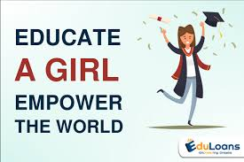

The importance of educating a girl child in the society and the following are some of them.
Educating the girl child will help in empowering them to come forward and contribute towards the prosperity and development of the country
Helpless condition can’t be changed for the men if the women are backward and depend on men. Economic independence and empowerment will come when we educate the girl child.
Educating of the girl child helps in the improvement of a good life. The identity of the girl won’t be lost. She has the ability to read and learn about her own rights. She won’t be trodden down about her rights. There will be a general improvement on her life.
Educated girls bring an awareness of the importance of hygiene and health. Through education, they can lead a healthy life style. The women that are educated can carter for their children better.
Educated women are now looked upon with dignity and honor. They become a source of inspiration for millions of young girls who make them their role-models.
Educated girls can prove to be successful in their different professions. When the girl child have the opportunity to be educated, it gives her the better chance to become a successful cook, engineer, doctor or the choice of profession she wants.